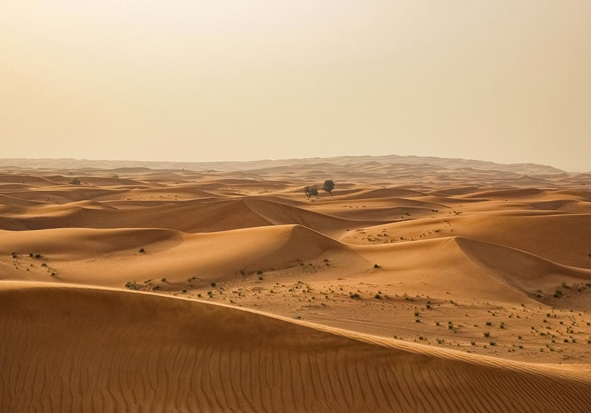
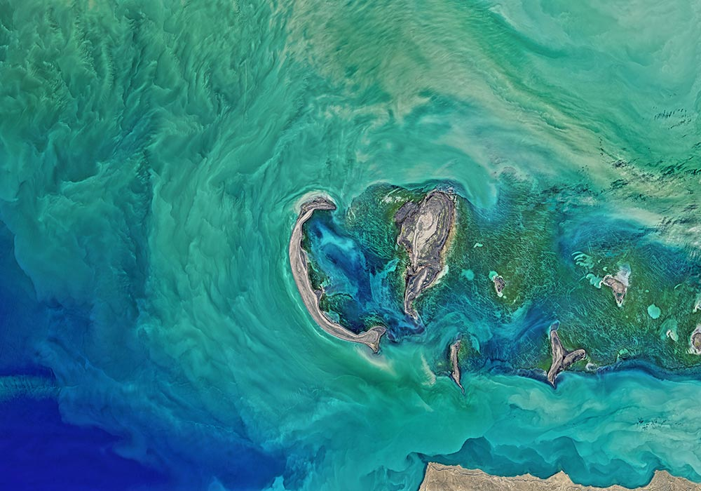

The Manifesto consists of six Core Principles that state the rationale, plus five derivative Action Principles outlining humanity's duties to Earth and to the geographic ecosystems Earth comprises. It is offered as a guide to ethical thinking, conduct and social policy.
Over the last century advances have been made in scientific, philosophical and religious attitudes to non-human Nature. We commend the efforts of those whose sensitivity to a deteriorating Earth has turned their vision outward, to recognition of the values of the lands, the oceans, animals, plants and other creatures. And yet, for lack of a common ecocentric philosophy, much of this goodwill has been scattered in a hundred different directions. It has been neutralized and rendered ineffective by the one, deep, taken-for-granted cultural belief that assigns first value to Homo sapiens sapiens and then, sequentially, to other organisms according to their relatedness to the primary one.
The recent insight that Earth, the Ecosphere, is an object of supreme value has emerged from cosmologic studies, the Gaia hypothesis, pictures of Earth from space, and especially ecological understanding. The central ecological reality for organisms - 25 million or so species - is that all are Earthlings. None would exist without planet Earth. The mystery and miracle called life is inseparable from Earth's evolutionary history, its composition and processes. Therefore, ethical priority moves beyond humanity to its inclusive Earth home. The Manifesto maps what we believe is an essential step toward a sustainable Earth-human relationship.
The Ecosphere, the Earth globe, is the generative source of evolutionary creativity. From the planet's inorganic/organic ecosystems organisms emerged: first bacterial cells and eventually those complex confederations of cells that are human beings. Hence, dynamic ecosystems, intricately expressed in all parts of the Ecosphere, exceed in value and importance the species they contain.
The reality and value of each person's ecological or outer being has attracted scant attention compared to the philosophic thought lavished on humanity's inner being, the latter an individualistic focus that draws attention away from ecological needs and neglects the vital importance of the Ecosphere. Extended to society as concern only for the welfare of people, this homocentrism (anthropocentrism) is a doctrine of species-selfishness destructive of the natural world. Biocentrism that extends sympathy and understanding beyond the human race to other organisms marks an ethical advance, but its scope is limited. It fails to appreciate the importance of the total ecological "surround." Without attention to the priority of Earth-as-context, biocentrism easily reverts to a chauvinistic homocentrism, for who among all animals is commonly assumed to be the wisest and best? Ecocentrism, emphasizing the Ecosphere as the primary Life-Giving system rather than merely life's support, provides the standard to which humanity must appeal for future guidance.
We humans are conscious expressions of the Ecosphere's generative forces, our individual "aliveness" experienced as inseparable from sun-warmed air, water, land, and the food that other organisms provide. Like all other vital beings born from Earth, we have been "tuned" through long evolution to its resonances, its rhythmic cycles, its seasons. Language, thought, intuitions - all are drawn directly or metaphorically from the fact of our physical being on Earth. Beyond conscious experience, every person embodies an intelligence, an innate wisdom of the body that, without conscious thought, suits it to participate as a symbiotic part of terrestrial ecosystems. Comprehension of the ecological reality that people are Earthlings, shifts the center of values away from the homocentric to the ecocentric, from Homo sapiens to Planet Earth.
"Integrity" refers to wholeness, to completeness, to the ability to function fully. The standard is Nature's sun-energized ecosystems in their undamaged state; for example, a productive tract of the continental sea-shelf or a temperate rain forest in pre-settlement days when humans were primarily foragers. Although such times are beyond recall, their ecosystems (as much as we can know them) still provide the only known blueprints for sustainability in agriculture, forestry, and fisheries. Current failings in all three of these industrialized enterprises show the effects of deteriorating integrity; namely, loss of productivity and aesthetic appeal in parallel with the continuing disruption of vital ecosystem functions.
The evolutionary creativity and continued productivity of Earth and its regional ecosystems require the continuance of their key structures and ecological processes. This internal integrity depends on the preservation of communities with their countless forms of evolved cooperation and interdependence. Integrity depends on intricate food chains and energy flows, on uneroded soils and the cycling of essential materials such as nitrogen, potassium, phosphorus. Further, the natural compositions of air, sediments, and water have been integral to Nature's healthy processes and functions. Pollution of these three, along with exploitive extraction of inorganic and organic constituents, weakens ecosystem integrity and the norms of the Ecosphere, the fount of evolving Life.
The originating powers of the Ecosphere are expressed through its resilient geographic ecosystems. Therefore, as first priority, the ecocentric philosophy urges preservation and restoration of natural ecosystems and their component species. Barring planet-destroying collisions with comets and asteroids, Earth's evolving inventiveness will continue for millions of years, hampered only where humans have destroyed whole ecosystems by exterminating species or by toxifying sediments, water and air. The permanent darkness of extinction removes strands in the organic web, reducing the beauty of the Earth and the potential for the future emergence of unique ecosystems with companion organisms, some possibly of greater-than-human sensitivity and intelligence.
The first rule of intelligent tinkering is to save all the parts
– Aldo Leopold - Sand County Almanac
Actions that unmake the stability and health of the Ecosphere and its ecosystems need to be identified and publicly condemned. Among the most destructive of human activities are militarism and its gross expenditures, the mining of toxic materials, the manufacture of biological poisons in all forms, industrial farming, industrial fishing, and industrial forestry. Unless curbed, lethal technologies such as these, justified as necessary for protecting specific human populations, enriching special corporate interests, and satisfying human wants rather than needs, will lead to ever-greater ecological and social disasters.